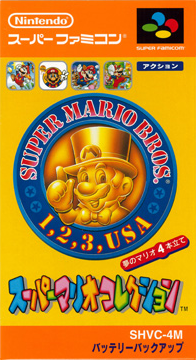

1993年7月14日発売
開発・発売：任天堂

自分が初めてプレイしたマリオはこれでした。
このゲームは、初期のマリオの名作「スーパーマリオブラザーズ」「スーパーマリオブラザーズ２」「スーパーマリオブラザーズ３」
「スーパーマリオＵＳＡ」をＳＦＣでリメイクしたものです。
ファミコンのときはセーブができませんでしたが、ＳＦＣになって各ワールドでセーブが可能になり、難易度もやさしくなりました。
また、きれいなグラフィックになっていて、ＳＦＣというハードの凄さを実感できます。
また、Ｗｉｉでもこのソフトが復刻しているので、今でも手に入れやすいです。ブックオフに売っていました。